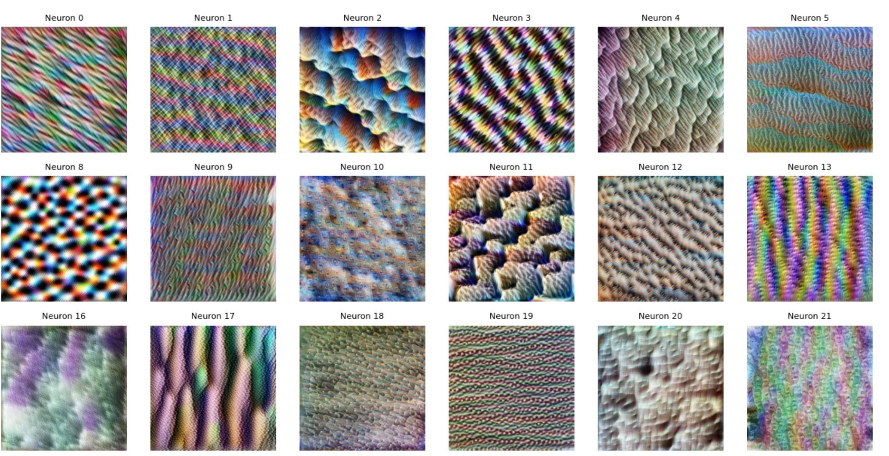

Neural networks are what I would describe as opaque: they perform incredibly well, but it's hard to tell what exactly is happening inside. What is each neuron "looking" for? What kinds of patterns make them activate?
I was first exposed to these interpretability questions through my research in the Murty Lab, where I studied how neural representations in brain-inspired networks can be better understood and visualized.
I used the torch-dreams library, a PyTorch-based toolkit for visualizing what specific neurons or layers in a model respond to. My goal was to generate images that maximally activate certain neurons in the CLIP-RN50 model, which I had been experimenting with for another project involving brain-inspired representations.
Working inside a collab notebook, I wrote a script that optimized random noise images to activate neurons in various layers of CLIP’s ResNet-50 backbone. I experimented with different layers and visualized how low-level neurons tend to respond to textures and colors, while deeper ones respond to shapes or semantic categories.
One particularly striking moment was seeing how a neuron deep in the network consistently generated organic, curved patterns resembling faces or eyes, and realizing that this unit might be specializing in face-like structures. It's one thing to read about hierarchical feature abstraction, but seeing it emerge in real-time was a whole new level of insight.
This project not only deepened my understanding of how vision models learn, but also gave me tools to make these systems more interpretable. Visualization helped bridge the gap between numerical outputs and human intuition, making the black box a little less black.
torch-dreams, these patterns reveal the textures and structures the network has learned to detect.